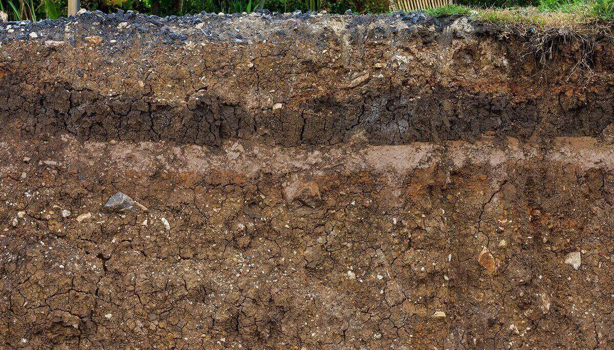

Bitki büyümesi için toprakta bulunan besin maddeleri ve verimliliği etkileyen faktörler.
Renk Özellikleri:
Toprağın rengi, içerdiği organik madde, mineraller ve diğer faktörler tarafından belirlenir. Renk, toprağın sağlığı, içeriği ve kullanışlılığı hakkında önemli ipuçları sağlar.
Örneğin:
Kırmızı veya Kahverengi: Bu renkler genellikle yüksek demir oksit içeriği nedeniyle oluşur. Yüksek oksijen içeriğiyle ilişkilendirilebilir ve genellikle iyi drene olan topraklarda bulunur.
Siyah veya Koyu Kahverengi: Yüksek organik madde içeriği nedeniyle oluşabilir. Bu topraklar genellikle verimlidir ve tarımsal üretim için uygun olabilir.
Beyaz veya Açık Renkli: Düşük organik madde içeriği ve minerallerin azlığından kaynaklanabilir. Bu topraklar genellikle kireçtaşı gibi minerallerin baskın olduğu alanlarda bulunabilir.
Yapısal Özellikler:
Toprağın yapısı, parçacıkların düzeni ve birbirlerine olan bağlılığı ile ilgilidir. Yapı, toprağın su tutma kapasitesi, hava dolaşımı ve köklerin büyüme şekli üzerinde etkilidir.
Toprak Teksürü: Parçacık boyutu, toprak tekstürünü belirler. Kumlu topraklar, iri taneli olduğu için suyu hızla geçirirken, killi topraklar küçük taneli olduğu için suyu daha fazla tutabilir.
Toprak Agregatları: Parçacıkların bir araya gelerek oluşturduğu yapılar, toprak agregatları olarak adlandırılır. İyi bir agregat yapısı, su geçirgenliği ve hava dolaşımı için önemlidir.
Toprağın rengi ve yapısı, toprak verimliliği, bitki yetiştirme kabiliyeti ve su tutma kapasitesi gibi konularda önemli ipuçları sunar. Bu özellikler, tarım ve ekoloji gibi alanlarda toprakların nasıl kullanılacağına dair kararlar alınmasında yardımcı olur.
Bilgi Almak İçin Tıkla